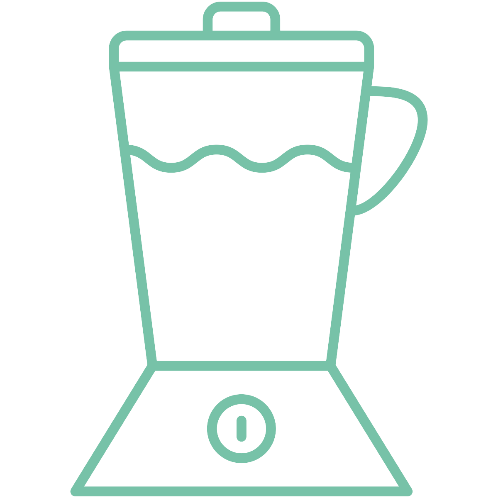

My Name is Aisha

Web Developer
Teacher

Dog Enthusiast
Questions for the next few hours
- What is feedback?
- Why do we need it?
- Why is it scary/uncomfortable?
Constructive
Affirmative
We Need Both!
Be Specific
Keep it focused and actionable so that there's a clear path forward.
Deliver Feedback Proactively
Try not to let things fester too long.
Take a Breath
Let's back up a little! Don't jump in angry.
Check Your Bias
Your perception of the issue may not match the other person's lived experience.
Invite Discussion
Making too many assumptions can hold the conversation back.
We want to change or encourage a behavior, not a person.
None of us work in a bubble.
It doesn't have to be scary!
Sources
- Radical Candor
- Crucial conversations
- My own experience
- Detroit Labs
Disclaimers
- You will have to talk to each other.
- It may be a little awkward.
Peer-to-Peer feedback

You are all leaders.
Where we've been
- Be Specific
- Deliver Feedback Proactively
- Take a Breath
- Check Your Bias
- Invite Discussion
Where we're going
- Establish a shared vocabulary
- Develop crucial conversation skills
- Learn to spot when and how things are going wrong
- Practice!
Give feedback
This is how we do it
- Guides & Adventurers
- 1:1s with Delivery Leads
- Regularly soliciting feedback
Create a safe environment
This is how we do it
- Team fun
- Team agreements + reevaluation when members join or leave
- Trust/alignment exercise
Get stuff done
This is how we do it
- Agile workflow
- PR review
- Respect for and support of QA
Write down at least one example of a time you delivered or received each type of feedback:
- Ruinous Empathy
- Manipulative Insincerity
- Obnoxious Aggression
- Radical Candor
Get Crystal Clear 🔮
- What's your objective?
- Make sure everyone is in alignment.
- Assume good faith whenever possible.
User manuals 📔
Listen 📣
Solicit Feedback Regularly 📝
Pair up and take turns:
- Each person will share a story in which either an attempt at feedback didn’t go well or someone failed to give necessary feedback.
- The listener should listen and nothing else. No verbal responses.
- Each partner gets two minutes.
Content 🥊
Pattern 📈
Relationship 👭
Institutional
- What is your role relative to theirs?
- Do you have some institutional power over them?
- Even if not, could they perceive this to be true based on your seniority or some other factor?
Social
- Would your approach be different if the other person was a man vs. another gender?
- White vs. a POC?
- How do you think your own identity affects your answer?
Write down one issue in your work life and one in your personal life that merits one of these conversations.
Answer the following questions with respect to your chosen conversations:
- How might you have contributed to this situation?
- What reason might they have for acting the way they are?
- How could you move forward together?
The Followthrough
- Examine how the behavior changed.
- Own your experience.
- Be prepared to walk away if the environment is truly toxic.
Write down the worst case scenario and at least one way you could address it for each of your crucial conversations.
Instructions
- Form a group of four.
- Pull up
- Read your role to yourself for 30 seconds before speaking.
- If you're not roleplaying a particular scenario, observe and be ready to provide feedback on how it went!
- Each pairing should take about five minutes.